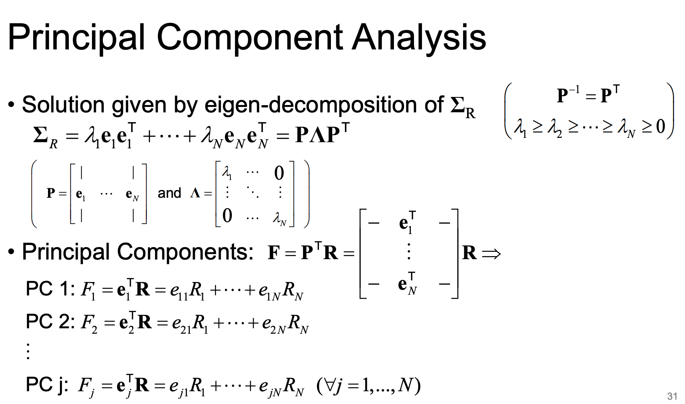
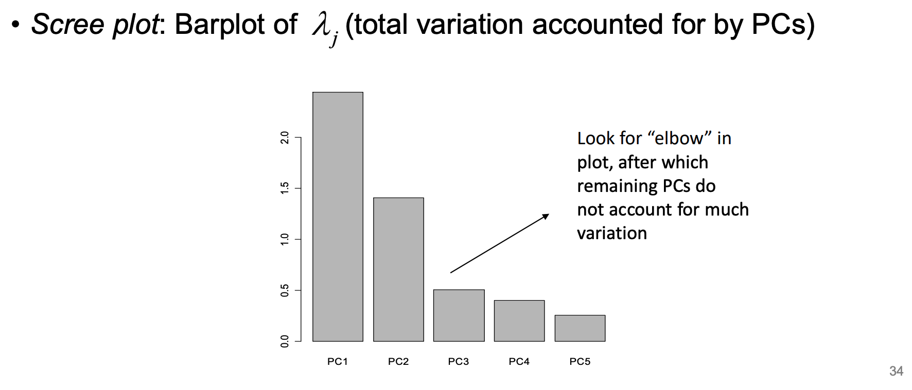
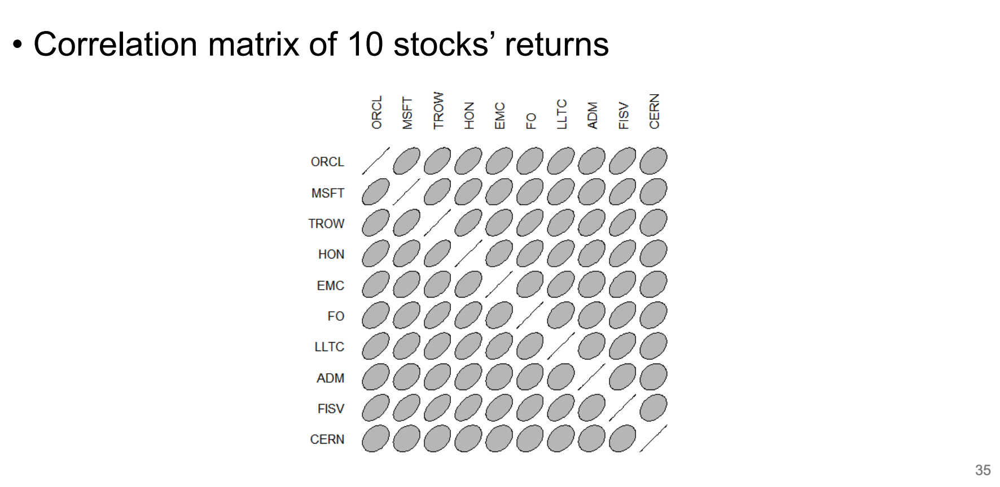
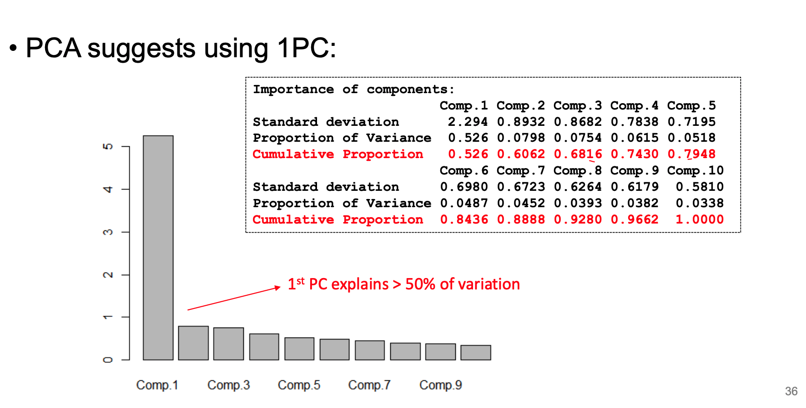
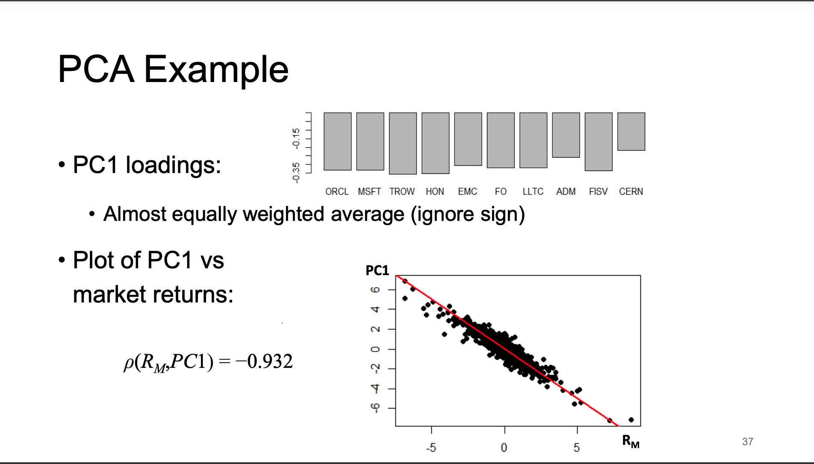
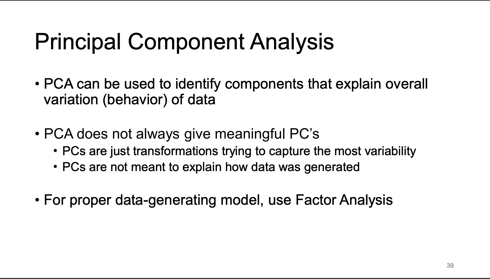
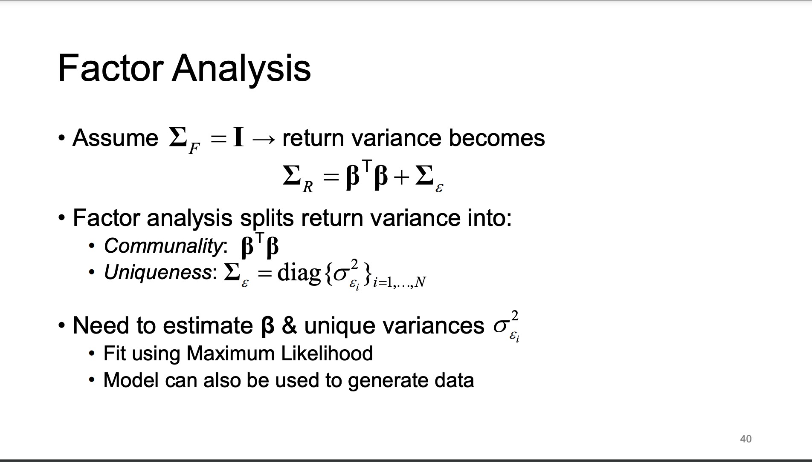
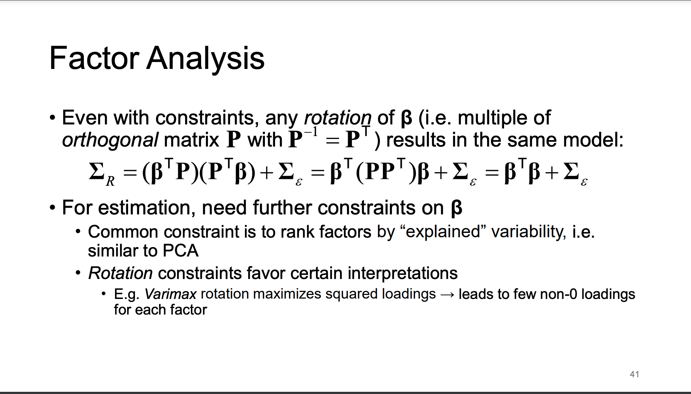
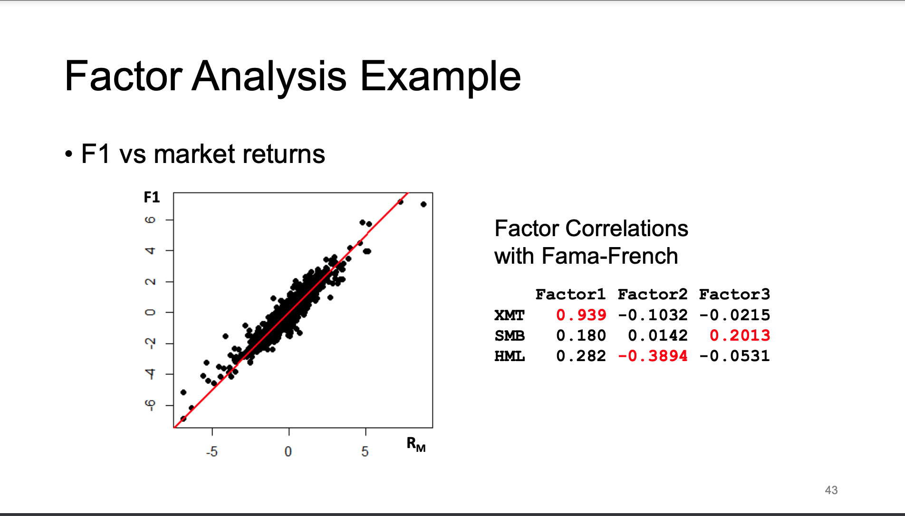
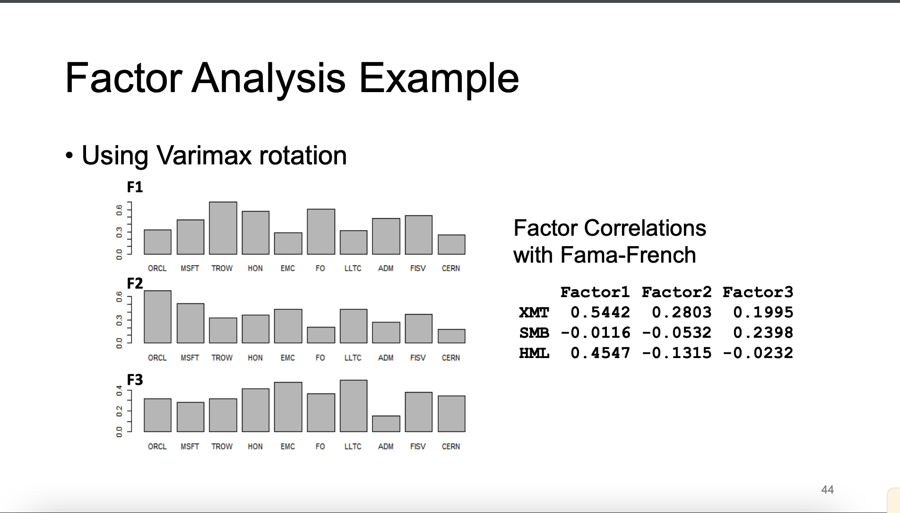

Chapter 8 Factor Models
8.1 Three Factor models
The CAPM model assumes the market is a single factor that drives asset returns. - In practice, CAPM does not adequately describe real-world returns
We can improve this model by including more factors in the regression.
There are three types of factor models we will look at:
- Macroeconomic: Factors are observable economic and financial time series data (eg return of the S&P 500)
- Fundamental: Created explicitly or implicitly from observable asset characteristics
- Statistical (Latent variable model): Factors are unobservable and extracted from asset returns
All three types follow some form of \[ \begin{aligned} R_{i}(t) = \beta_{i,0} + \beta_{i,1}F_{1}(t)+\dots+\beta_{i,p}F_{p}(t)+\epsilon_{i}(t), \quad \forall \begin{cases} i=1,\dots, N \\ t \in \mathbb{R} \end{cases} \end{aligned} \] where:
- \(R_{i}(t)\) is return on the \(i^{th}\) asset at time t
- \(F_{j}(t)\) is the \(j^{th}\) common factor at time t
- \(\beta_{i,j}\) is the factor loading/beta of \(i^{th}\) asset on the \(j^{th}\) factor
- \(\epsilon_{i}(t)\) is the idiosyncratic/unique return of asset \(i^{th}\)
We want the errors to be independent from the factors, \[ Cov[\epsilon(t), F(t)] = 0 \]
In matrix form,
\[ \begin{aligned} & \Leftrightarrow \\ & {\left[\begin{array}{c} R_1(t) \\ \vdots \\ R_N(t) \end{array}\right] }=\left[\begin{array}{c} \beta_{1,0} \\ \vdots \\ \beta_{N, 0} \end{array}\right]+\left[\begin{array}{ccc} \beta_{1,1} & \cdots & \beta_{1, p} \\ \vdots & \ddots & \vdots \\ \beta_{N, 1} & \cdots & \beta_{N, p} \end{array}\right]\left[\begin{array}{c} F_1(t) \\ \vdots \\ F_p(t) \end{array}\right]+\left[\begin{array}{c} \varepsilon_1(t) \\ \vdots \\ \varepsilon_p(t) \end{array}\right] \\ & \Leftrightarrow \\ & \mathbf{R}(t)=\boldsymbol{\beta}_0+\boldsymbol{\beta}^{\top} \mathbf{F}(t)+\boldsymbol{\varepsilon}(t) \end{aligned} \]
The factors \(F_{j}(t)\) are stationary with moments: \[ \begin{aligned} R(t) &= \beta_{0} + \beta^{T}F(t) + \epsilon(t)\\ \\ \mu_{r} &= \mathbb{E}(R(t)) = \mathbb{E}[\beta_{0} + \beta^{T}F(t) + \epsilon(t)]\\ &= \beta_{0}+\beta^{T}\underbrace{ \mathbb{E}[F(t)] }_{ \mu_{F} } + \underbrace{ \mathbb{E}[\epsilon(t)] }_{ 0 }\\ &= \beta_{0} + \beta^{T}\mu_{F}\\ \\ \Sigma_{R} &= \mathbb{V}[\beta_{0}+\beta^{T}F(t) +\epsilon(t)]\\ &\underbrace{= \mathbb{V}[\beta^{T}F(t)] + \mathbb{V}[\epsilon(t)]}_{ \text{As } F(t)\text{ indep of } \epsilon_(t)}\\ &= \beta^{T}\underbrace{ \mathbb{V}[F(t)] }_{ \Sigma_{F} }\beta+\Sigma_{\epsilon}\\ &= \beta^{T}\Sigma_{F}\beta+\underbrace{ \Sigma_{\epsilon} }_{ \text{Diagonal} } \end{aligned} \]
We can also find the moments of the portfolio with weights \(w = [w_{1}, \dots w_{N}]^{T}\) \[ \begin{aligned} R_{port} = w^{T}R \implies \begin{cases} \mu_{port} = \mathbb{E}[R_{port}] = w^{T}\mathbb{E}[R] = w^{T}(\beta_{0}+\beta_{\mu_{F}}) \\ \sigma^{2}_{port} = \mathbb{V}[R_{port} = \mathbb{V}[w^{T}R] = w^{T}\mathbb{V}[R]w = w^{T}(\beta^{T}\Sigma_{F}\beta+\Sigma_{\epsilon})w \end{cases} \end{aligned} \]
8.2 Factor Model Assumptions
- Factors \(F_j(t)\) are stationary, with moments: \[ E[\mathbf{F}(t)]=\boldsymbol{\mu}_F \quad \& \quad \operatorname{Var}[\mathbf{F}(t)]=\boldsymbol{\Sigma}_F \]
- Asset-specific errors \(\varepsilon_i(t)\) are uncorrelated with common factors: \[ \operatorname{Cov}[\mathbf{\varepsilon}(t), \mathbf{F}(t)]=\mathbf{0} \]
- Errors are serially & contemporaneously uncorrelated across assets \[ \operatorname{Var}[\boldsymbol{\varepsilon}(t)]=\operatorname{diag}\left[\left\{\sigma_{\varepsilon_i}^2\right\}_{i=1, \ldots, N}\right]=\boldsymbol{\Sigma}_{\varepsilon} \quad \& \operatorname{Cov}[\boldsymbol{\varepsilon}(t), \boldsymbol{\varepsilon}(s)]=\mathbf{0} \]
8.3 Time Series Regression Models
Consider model for which factor values are known (e.g. macro/fundamental model)
Estimate betas & risks (variances) one asset at a time, using time series regression
- For each fixed \(i=1,\dots N\), fit regression model: \[ R_{i}(t) = = \beta_{i,0} + \beta_{i,1}F_{1}(t)+ \dots + \beta_{i,p}F_{p}(t) + \epsilon_{i}(t) \]
Most models will always include some proxy for the overall economy (eg the market)
Instead of Fama-French, there is BARRA which uses the cross section of returns? Still regression tho
8.3.1 Fama-French 3 Factor Model
Additionally to the market, they looked at two other factors that are consistent over many datasets and time periods.
Small Minus Big: (SMB) One factor tries to capture the size(market cap) of the company/stock, which empirically showed that size played a role in its return
- Regressed returns on how companies of a certain size/group did
- They took the smallest and biggest companies, and looked at their avg return over some period, creating a difference to use to separate the groups of companies
High Minus Low (HML): The second factor looks at whether a company is a value one or not. Measured using book-to-market ratio.
These two factors were found to have statistically significant coefficients in multiple regression.
People frequently use the factor model to estimate the return covariance matrix. They can use the sample covariance matrix of the factors and apply the beta vector in order to obtain the return covariance matrix
\[ \operatorname{Var}(\mathbf{R})=\hat{\boldsymbol{\Sigma}}_R=\hat{\boldsymbol{\beta}}^{\top} \hat{\boldsymbol{\Sigma}}_F \hat{\boldsymbol{\beta}}+\hat{\boldsymbol{\Sigma}}_{\varepsilon} \] where: \[ \begin{aligned} & \hat{\boldsymbol{\beta}}=\text { beta coefficient matrix (from regressions) } \\ & \hat{\boldsymbol{\Sigma}}_F=\text { factor sample covariance matrix } \\ & \hat{\boldsymbol{\Sigma}}_{\varepsilon}=\text { diagonal error variance matrix (from residuals) } \end{aligned} \] This gives more stable estimates than sample covariance.
8.4 Statistical Factor Models
In this model, the factors are unknown (latent) and unobserved. This implies that we need to estimate both \(\beta\) and \(F\).
Unusual constraint: Because the factors are uncorrelated (not necessarily i.i.d.) \[ \Sigma_{F} = Cov(F)= I \sigma_F \quad \& \quad \mu_{F}=\mathbb{E}(F) = 0 \]
This gives us the resulting moments of the returns: \[ \begin{aligned} \mu_{R} &= \mathbb{E}[R] = \mathbb{E}[\beta_{0}+\beta^TF + \epsilon] = \beta_{0}+\beta^{T}\underbrace{ \mathbb{E}[F] }_{ 0 }+\underbrace{ \mathbb{E}[\epsilon] }_{ 0 } = \beta_{0}\\ \\ \Sigma_{R} &= \mathbb{V}[R] = \mathbb{V}[\boldsymbol{\beta}_{0}+\boldsymbol{\beta}^{T}F+\boldsymbol{\epsilon}] = \boldsymbol{\beta}^{T}\mathbb{V}[F]\boldsymbol{\beta}+\boldsymbol{\Sigma_{\epsilon} = \beta^{T}(I\cdot \sigma_{F})\beta+\Sigma_{\epsilon}} \end{aligned} \]
8.5 Principle Component Analysis (PCA)
This technique helps reduce the dimensionality of a problem. Consider a factor model without errors: \[ \mathbf{R}(t) = \boldsymbol{\beta}_{0}+\boldsymbol{\beta}^{T}\mathbf{F}(t) \implies \boldsymbol{\Sigma_{R}=\beta^{T}\Sigma_{F}\beta} \]
Given a set of N assets, we can construct a set of variables (components) capturing most of the variability.
- PCA is a linear transformation
- The goal is to capture as much variation as possible.
When we apply PCA to the statistical model, we find \(n\) factors set as the PCA components. These components are uncorrelated, and have maximum variance.
\[ F_{1},\dots,F_{n} \text{ are factors which are the Principle Components} \] \[ \begin{aligned} F_{1} &= \gamma_{1}^{T}\mathbf{R} = \gamma_{11}R_{1}+\dots+\gamma_{1n}R_{n}\\ \vdots\\ F_{n} &= \gamma_{n}^{T}\mathbf{R} = \gamma_{n1}R_{1}+\dots+\gamma_{nn}R_{n}\\ \end{aligned} \]
Where each factor:
\[ \begin{aligned} F_{i} &= \gamma_{i}^{T}\mathbf{X} \quad \text{Maximizes } \ Var(F_{i})=\boldsymbol{\gamma_{i}^{T}\Sigma_{R}\gamma_{i}} \quad s.t. \boldsymbol{\gamma_{i}^{T}\gamma_{i}}=1\\ \end{aligned} \]
\[ \begin{aligned} Cov(F_{i},F_{j}) &= \boldsymbol{\gamma_{j}^{T}\Sigma_{R}\gamma_{i}} = 0\\ \\ \text{Where }& i,j\in 1,\dots,n, \quad i > j \end{aligned} \]
Supposedly does not imply that \(\gamma_{j}^{T}\gamma_{i} = 0\) which may mean they are not orthogonal? But PCA components should be orthogonal?

We can find the \(Cov(F)\) and beta (loading factor) of \(R_i\) on \(F_j\): \[ \begin{aligned} \mathbb{V}(\mathbf{F})&= \mathbb{V}(\mathbf{P}^{T}\mathbf{R})\\ &= \mathbf{P}^{T}\mathbb{V}(\mathbf{R})\mathbf{P}\\ &= \mathbf{P}^{T}\boldsymbol{\Sigma}_{R}\mathbf{P}\\ &\text{By Eigen-decomposition}\\ &= \mathbf{P^{T}(P\Lambda P^{T})P}\\ &\text{Where } \mathbf{P^{T}P} = 1\\ &= \boldsymbol{\Lambda} \end{aligned} \]
It’s kind of circular logic. Also, \(\Lambda\) is sorted with the eigenvalue associated with the eigenvector that captures the most variance is first.
Fact: Total variance of all PC’s is equal to original variable variance.
\[ \begin{aligned} \text{ PC Total Variance = Population Total Variance } &\iff\\ tr(\Lambda) = tr(\Sigma) &\iff\\ \lambda_{1}+\dots+\lambda_{P} = \sigma_{1}^{2}+\dots+\sigma^{2}_{N} \end{aligned} \]
The proportion of total variance that is explained by each PC is: \[ Var(PC_{j}) =\frac{\lambda_{j}}{\lambda_{1}+\lambda_{2}+\dots+\lambda_{N}} \quad \text{Where } j=1,\dots,N \]
8.5.1 Selecting Components
The important part of PCA is how many components to select to capture a suitable amount of variability.
You don’t need many components if the data is very correlated, and a few components may represent most of the variance in the data.
We can also use a scree plot and pick the number of components before some “elbow” point.


PCA run on the correlation matrix (which is the standardized covariance matrix, which is preferred when there is very large range of variances between variables)

When we look at the first component, we can see it is almost an equal weighting of all the assets.

We can use PCA to identify components that explain overall variation of the data, although it is not guaranteed to give meaning components. For a proper data-generating model, we must use Factor Analysis.

8.6 Factor Analysis
He didn’t go into much detail, just went over how the factor analysis works at a high level and how you can’t really try to interpret the factors.

If the variance of the factors is simply the identity matrix, the variance of the returns is just the cross products of the factor variables plus some error variance.


